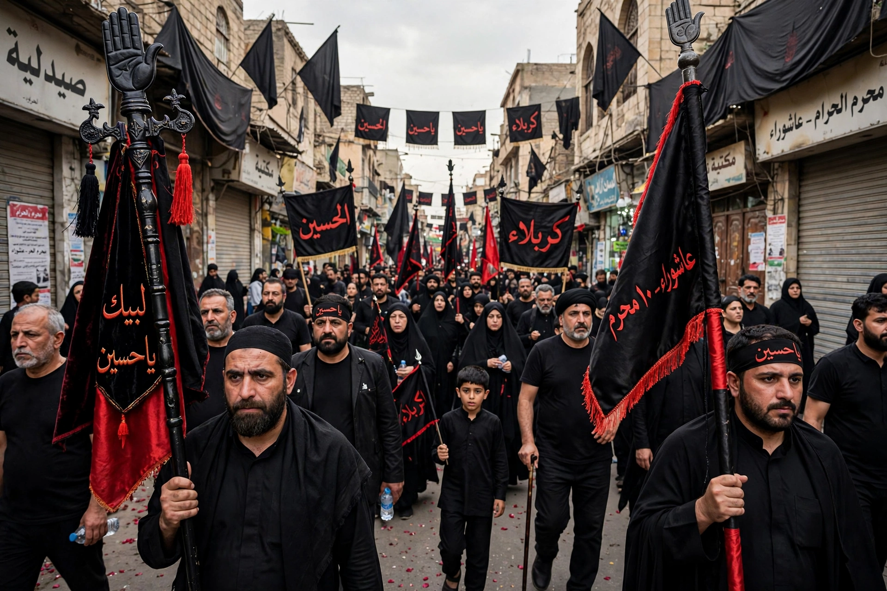

Muharram (Arabic: ٱلْمُحَرَّم) is the first month of the Islamic calendar and one of the four sacred months in Islam during which warfare is traditionally forbidden. The tenth day, Ashura, is a major day of commemoration, especially for Shia Muslims mourning the death of Husayn ibn Ali at Karbala in 680 CE.

| Muharram | |
|---|---|
| Calendar | Islamic (Hijri), month 1 |
| Key day | 10 Muharram — Ashura |
| Significance | New year; mourning for Husayn (Shia); fasting (Sunni tradition) |
The Islamic New Year begins on 1 Muharram, marking the Hijra era. Sunni Muslims traditionally fast on Ashura, commemorating Moses and the Exodus, while also recognizing the events of Karbala. For Shia Muslims, Muharram is a period of mourning (azadari) for Husayn, grandson of Muhammad, killed with his companions by Umayyad forces.
Observances include processions, passion plays (ta'ziya) in Iran, recitation of elegies, and gatherings in husayniyyas. In South Asia and the Caribbean (where it is called Hosay), public processions with tazias/tadjahs are held.